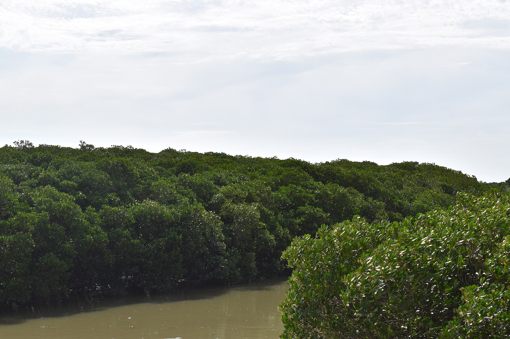

已进入保护区
低潮 · 观察窗口 2小时
当前探索地 · 01
福田红树林
国际重要湿地 · 黑脸琵鹭越冬栖息地
7月17日 · 候鸟观察季
潮水正在退去，今天很适合在滩涂寻找新朋友。
当前探索地 · 01
国际重要湿地 · 黑脸琵鹭越冬栖息地

它们常在退潮后的浅水区觅食。留意那把像汤匙一样的长嘴。

科普栈道 → 观鸟屋 → 潮间带
深圳山海连城 · 6 大湿地
从福田出发，沿海岸线逐站解锁你的湿地冒险。
红树林生态伙伴
每一次真实观察，都会点亮一张深圳湿地名片。
生态守护值 · 1,280
把每一次探索，积累成看得见的湿地守护行动。
保持画面清晰，尽量拍到完整的外形特征。
Platalea minor
全球濒危的珍稀水鸟，因扁平如匙的长嘴而得名。深圳湾是它们重要的越冬地。
黑脸琵鹭用什么方式在浅水中寻找食物？